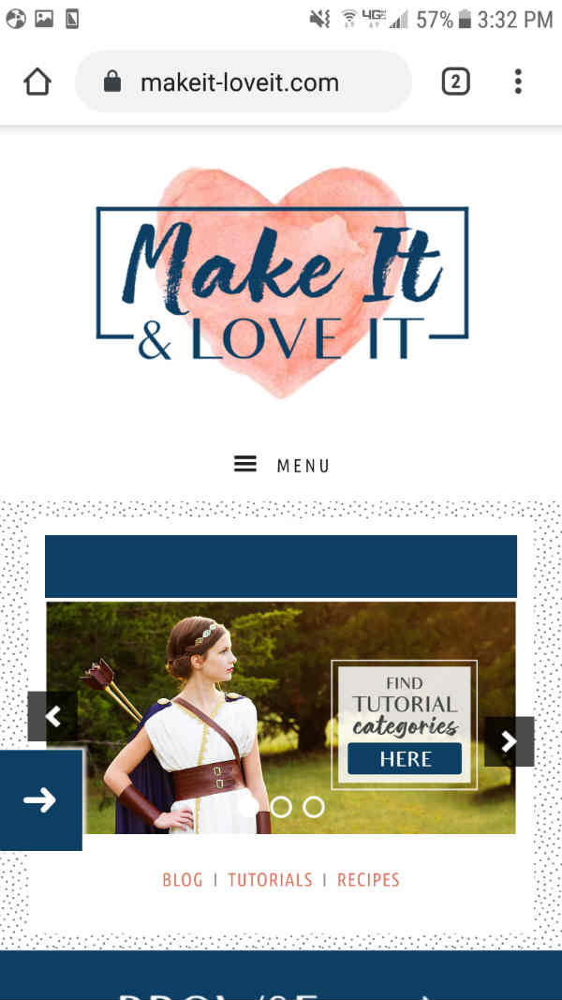
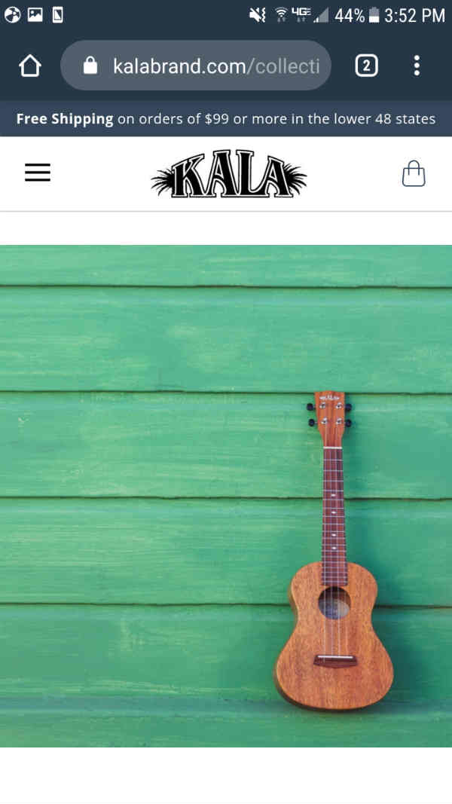

White Space and Clean Design
Make It Love It
Makeit-loveit.com

Blogs can often feel overwhelming as the amount of information they
contain can be huge. This mobile web page design keeps everything very
simple. There is lots of white space around the logo and the first
picture feature. Hick's Law (of eliminating options) is also applied here
and gives more opportunity for white space. It is seen in red "Blog | Tutorials |
Recipes" which instantly filters information
for the user right from the start.
Fitt's Law
5.11 Tactical
511tactical.com

The use of Fitt's Law is excellent in this mobile web site. There
is more to see further on down
the page. But, the user lands on a view featuring a button labeled "Shop
the Collection." It sits in bright orange right at the bottom of the screen
where the thumb usually hovers,
and spans the bottom of the screen. This makes it so
easy and fast for the user to tap the link.
Rule of Thirds
Kala Brand Music
Kalabrand.com

The picture used here obviously draws your eye to the
lower right third of the picture. This is where the instrument
is located. The use of the rule of thirds lends a professional
quality to the instrument even though it is only a picture. It instills
confidence in the instrument because the photo has quality and feels
professional.